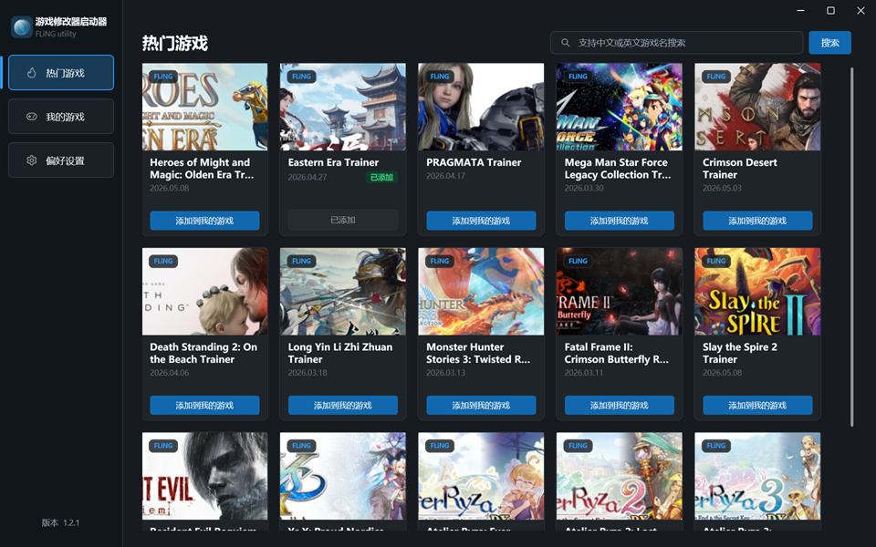
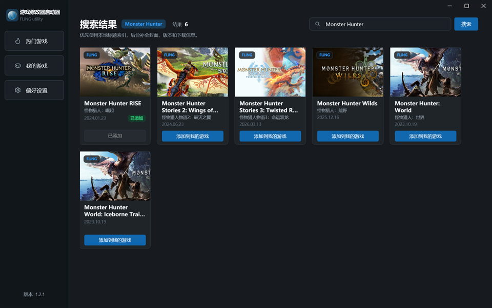
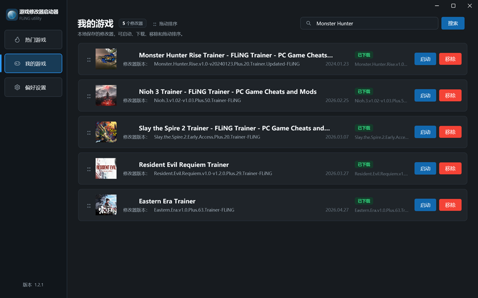
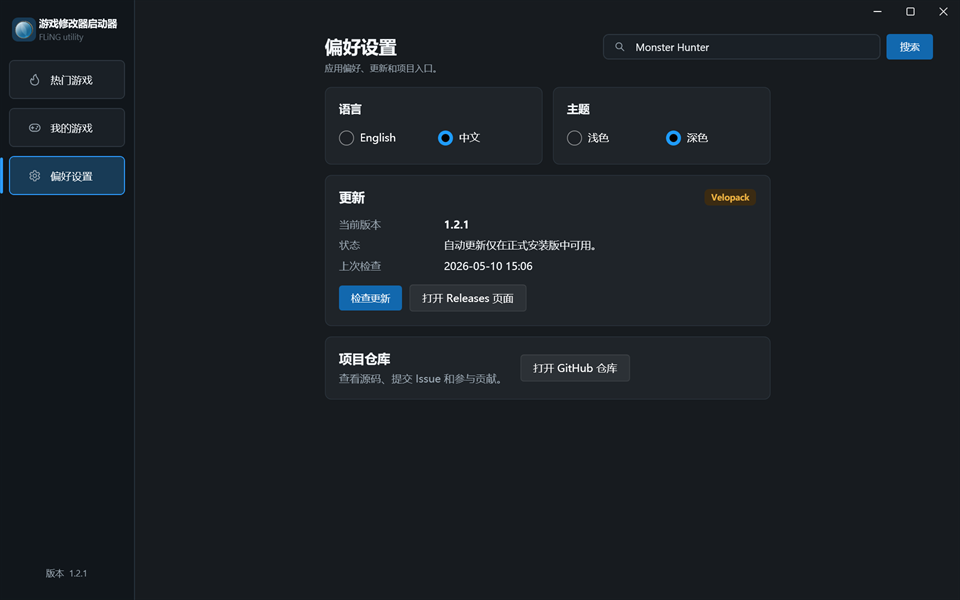

Windows 桌面应用
更轻松地管理游戏修改器
浏览、搜索、下载并启动修改器。支持中英文搜索与本地索引，启动快，管理稳。
Windows 专属
中英双语
开源免费
GitHub Releases
Desktop workflow




真实界面预览
当前桌面应用的实际操作演示
How it works
三步即可开始
1
搜索与浏览
先走本地索引，再做后台同步，快速找到你要的修改器。
2
下载与管理
一键下载并加入本地库，版本状态和封面统一管理。
3
启动与维护
从库中直接启动游戏或修改器，更新检查与版本提示保持清晰。
Core features
为玩家打造的高效工具
中英文搜索
本地标题索引优先返回结果，减少等待时间。
本地库管理
添加、拖拽排序、移除和封面补全都在一个界面完成。
版本选择
下载前选择对应版本，降低版本不匹配带来的问题。
自带更新流程
基于 Velopack 和 GitHub Releases，检查、下载并重启安装。
Open source and updates
开源、透明、可验证
完全开源，发布链路清晰，下载来源可追踪。
GPL-3.0
代码公开，欢迎审阅与贡献。
GitHub Releases
安装包与版本记录统一托管。
SHA256 校验
发布产物附带校验清单，便于核验完整性。
Windows 桌面定位
专注 Windows 10/11，不做多余平台包装。
Download
立即下载 Game Trainer Launcher
为 Windows 打造的修改器管理器，直接从 GitHub Releases 获取最新版。
下载最新版 前往 Releases 查看全部版本